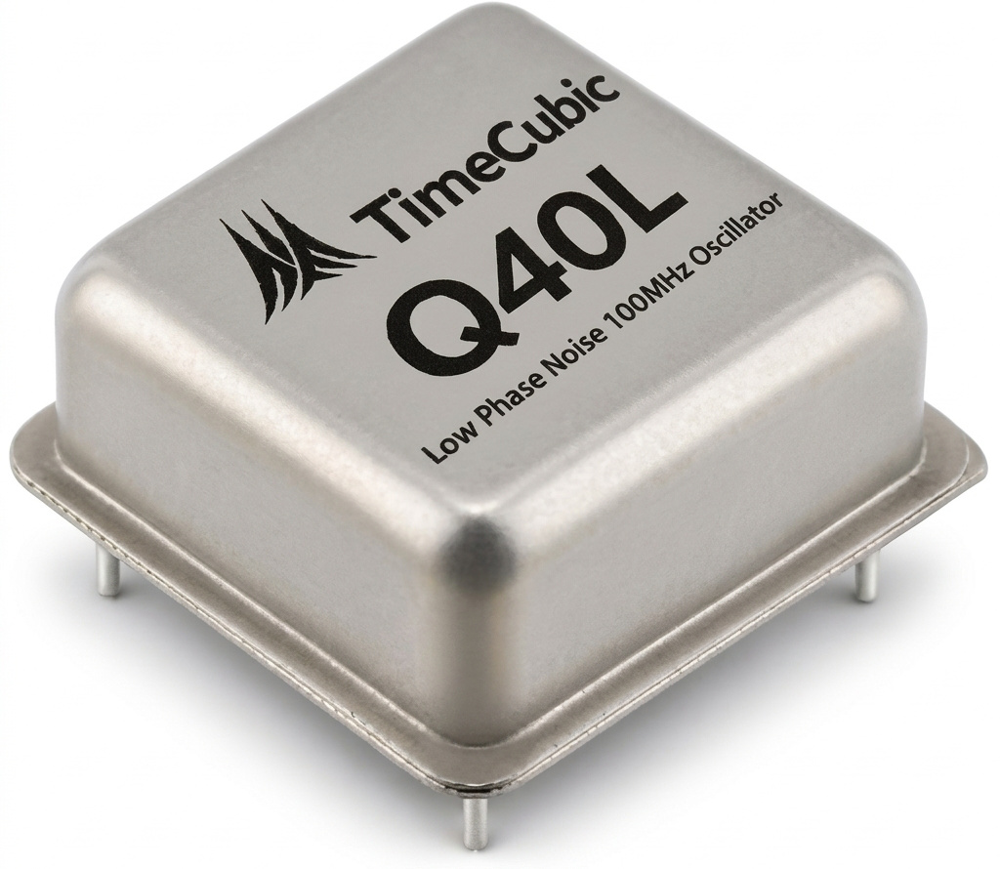
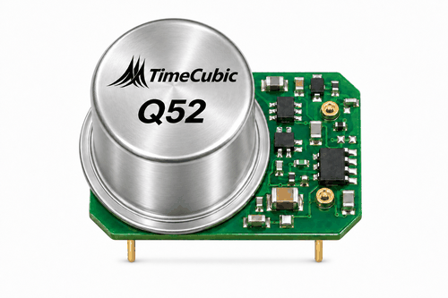
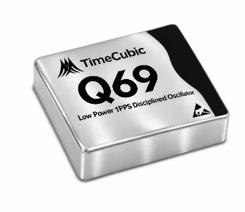
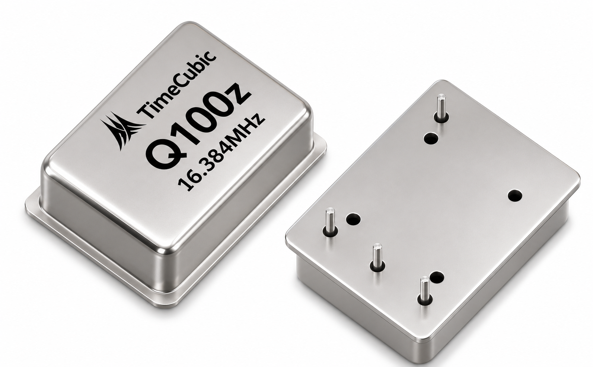
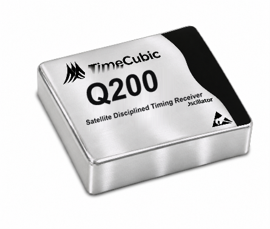

Parametric Comparison Matrix
Side-by-side comparison of package footprint, power consumption, frequency options, stability, and interfaces.
| Model & Series | Category | Size (mm) | Power (Steady) | Stability / Noise | Frequency | Interface / Discipline | Datasheet |
|---|---|---|---|---|---|---|---|
| Model Q40 (Q40L) | Miniature Low-Noise RF Oscillator | 12.5 × 12.5 × 5.6 | <350 mW @ 100M | ±100 ppb (-40~+85°C) • -175 dBc/Hz | 100 MHz | Analog Vc (0–2.8V) | Rev C ↓ |
| Model Q50 | Ultra-Low Power Oscillator | 21.6 × 15.3 × 10.0 | <60 mW (55–205 mW) | ±10 ppb • Aging opt. | 10, 16.384, 100 MHz | Analog VCON (0–2.8V) | Q50-100M ↓ |
| Model Q52 / Q52L | High-Stability Low-G Oscillator | 20.5 × 14.0 × 10.0 | 75–109 mW | ±2 ppb • ±0.3 ppb/g | 16.384 MHz | VCON / 1500G Shock opt. | Q52 ↓ Q52L ↓ |
| Model Q69 / Q69-100M | Rapid Warm-Up 1PPS Disciplined Osc. | 39.1 × 34.0 × 13.7 | 135–250 mW (30s warmup) | 1 ns RMS • 1000G shock | 5 to 100 MHz | RS232 ToD + Hitless 1PPS | Q69 ↓ 100M ↓ |
| Model Q100z | Ultra-Low Power OCXO | 36.3 × 27.2 × 16.0 | <70 mW (<85 mW max @ 25°C) | ±2 to ±5 ppb • <±0.05 ppb/d | 16.384 MHz (8.192M opt.) | Analog Vc (0–2.8V) • 1000g shock | Rev H ↓ |
| Model Q100 | Flagship OBN 1PPS Disciplined Module | 39.1 × 34.0 × 13.7 | <65 mW (220 mW warmup) | 1 ns RMS • ±1 ms/60d | 5, 8.192, 10, 16.384M | RS232 ToD Telemetry + 1PPS | Rev K ↓ |
| Model Q200 | Satellite Disciplined Timing Receiver | 65.0 × 65.0 × 23.0 | 3.0 W (@ 5V) | 1 ns RMS • ±1.0 μs/24h (@±5°C) | 10 MHz (5, 8.192 MHz) | RS232 ToD + Lock/Enable | Rev J ↓ |
Featured Hardware Architecture & Specifications
Deep-dive technical overview for each of the 7 released TimeCubic product series.

Q40L-100 Miniature Low Phase Noise OCXO & Low Jitter Master Clock
Engineered for high-frequency RF, Radar, and SDR applications requiring extreme spectral purity and sub-picosecond low jitter in an ultra-miniature footprint. The Q40 series packs a state-of-the-art 100 MHz low phase noise OCXO core into a tiny 12.5 × 12.5 mm package, achieving an exceptional phase noise floor of -175 dBc/Hz at 1 MHz offset while consuming less than 350 mW.

Q50 Ultra-Low Power OCXO & Low Power Oscillator (<60 mW)
Engineered specifically for subsea Ocean Bottom Nodes (OBN), marine seismic surveys, and battery-critical instrumentation. This benchmark low power OCXO and low power oscillator consumes less than 60 mW while maintaining high precision stability, low phase noise (-165 dBc/Hz floor), and sub-picosecond low jitter across wide temperatures.

Q52 / Q52L Low G-Sensitivity OCXO & Oscillator for C-UAS, Radar & On-The-Move Platforms
The Q52 series provides mission-critical stability for airborne Radar, Counter-UAS (C-UAS) systems, tactical communications on the move, and high-shock payloads. The new Q52L (Rev A, 2026) features tight temperature stability (±2 ppb), native low g-sensitivity oscillator architecture (±0.3 ppb/g acceleration sensitivity), and optional 1500G, 1ms mechanical shock survival.

Q69 Rapid Warm-Up High Precision OCXO & Disciplined Timing Module
A ruggedized 1PPS disciplined high precision OCXO built for mobile communications on the move, C-UAS radar tracking, and defense payloads. Operates reliably across -40°C to +85°C with rapid 30-second warm-up, hitless 1PPS re-steering, 1000G, 1ms shock survivability, and ultra-low phase noise up to 100 MHz (-175 dBc/Hz floor on Q69-100M).

Q100 Flagship 1PPS Disciplined Low Power OCXO Module for OBN
The world's leading low power OCXO timing module for seabed Ocean Bottom Nodes (OBN). Features continuous 1PPS input and 1PPS output disciplining down to 1 ns RMS phase and <10-12 in frequency. Model Q100 (Rev K) lowers warm-up power by 60% (220 mW) and steady power to <65 mW, with continuous 1-second phase telemetry via RS232 and 64-byte non-volatile user memory.

Q100z Ultra-Low Power OCXO for Subsea Sensors & Seismic Exploration
Housed in a 5-pin hermetic DIP metal can package (36.32 × 27.18 × 16.0 mm), Model Q100z is purpose-built for underwater sensor networks, ocean bottom nodes (OBN), seismic surveys, and oil & gas exploration. Drawing <70 mW typical steady-state power (<85 mW max @ +25°C) with fast 220 mW warm-up (1–4 min), it delivers industry-leading temperature stability up to <±2 ppb (0 to +50°C), low daily aging (<±0.05 ppb/day), 1000g shock survival, and analog frequency control (0–2.8V, ±0.7 ppm).

Q200 High Precision OCXO Satellite Disciplined Timing Receiver
High precision OCXO satellite-disciplined timing receiver with 10 MHz reference clock, ultra-low phase noise, and low jitter synchronization for Radar, C-UAS defense systems, 5G base stations, and mobile tactical operations on the move. Employs TimeCubic's proprietary machine learning adaptive holdover algorithm to maintain ±1.0 to ±1.5 μs over 24 hours during GPS loss even across ±5°C ambient temperature fluctuations.